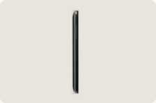
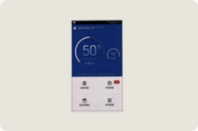
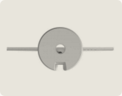
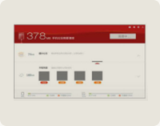

软件界面类质量标准
包含软件界面（GUI）的外观产品，应提交产品的六面视图：主视图（包含主图形界面）、后视图、左视图、右视图、俯视图、仰视图；以及 界面的变化状态图。
1. 主视图应该是含有主图形界面的产品视图；
2. 视图拍摄时，镜头应当正对着产品的中心部位；
3. 视图应当背景单一；
4. 产品和背景有适当的明度差（即黑白打印时，也能清晰显示产品的轮廓）；
5. 视图应当避免强光、反光、阴影、倒影、衬托物；
6. 视图应当清晰地显示外观设计；
7. 图片大小不得小于3厘米 × 8厘米，并不得大于15厘米 × 22厘米；
8. 各视图的比例应当一致，且投影关系相对应。
符合要求的申请文件（示例一）：
1．本外观设计产品的名称：带有图形界面的手机
2．本外观设计产品的用途：本外观设计产品用于手机文件的清理
3．本外观设计产品的设计要点：在于产品的图形界面的交互
4．最能表明本外观设计设计要点的图片或照片：主视图
- 主视图
- 俯视图
- 仰视图
- 后视图
- 
- 左视图
- 右视图
- 界面变化状态图1
- 
- 界面变化状态图2
符合要求的申请文件（示例二）：
1．本外观设计产品的名称：带有图形界面的电脑
2．本外观设计产品的用途：本外观设计产品用于手机文件的清理
3．本外观设计产品的设计要点：在于产品的图形界面的交互
4．最能表明本外观设计设计要点的图片或照片：主视图
- 主视图
- 俯视图
- 
- 仰视图

- 后视图
- 左视图
- 右视图
- 使用状态参考图1
- 使用状态参考图2
- 使用状态参考图3
- 使用状态参考图4
- 界面变化状态图1
- 界面变化状态图2
- 
- 界面变化状态图3